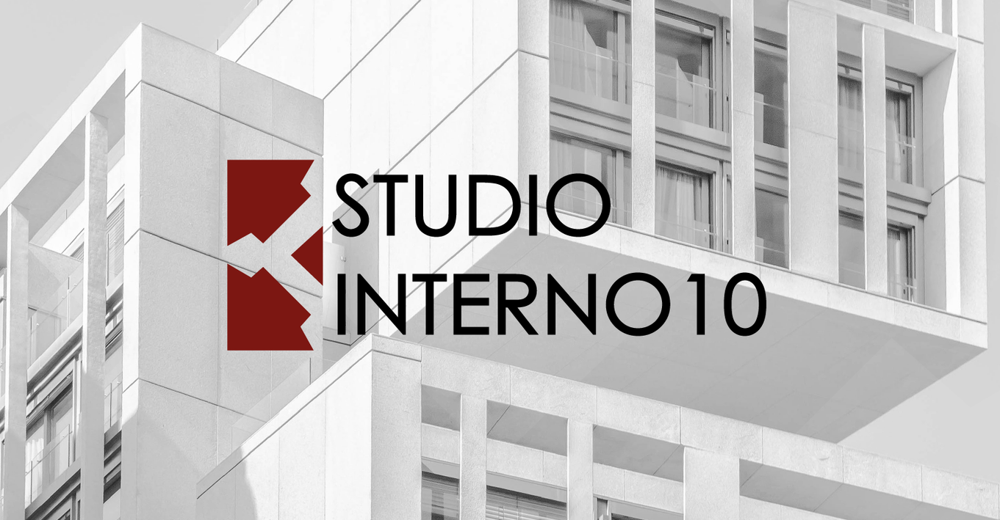
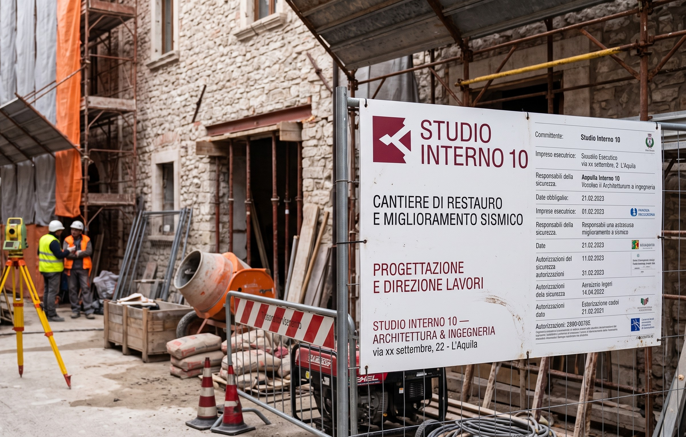
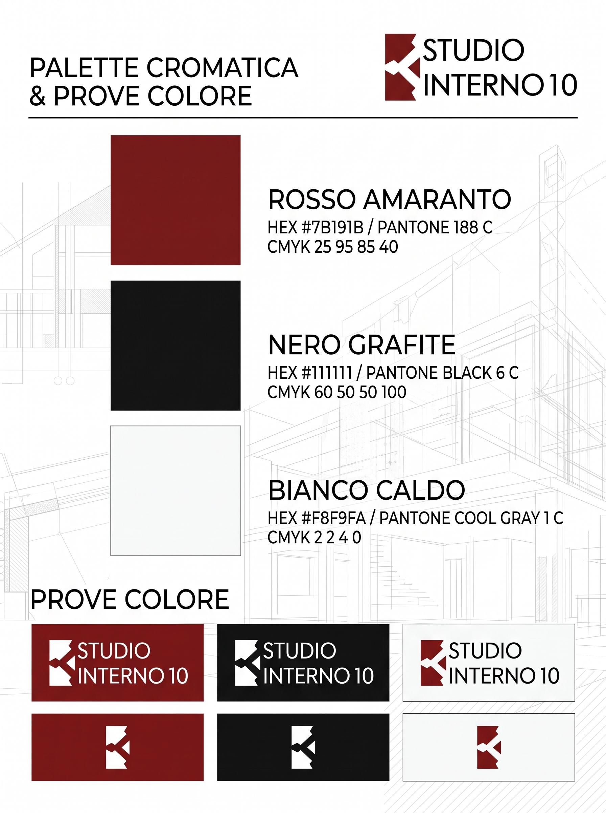
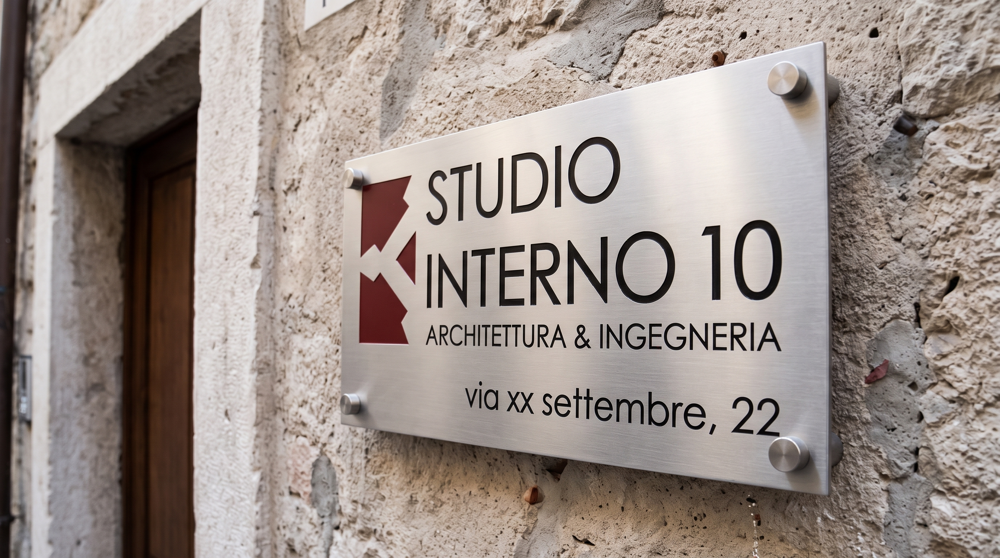
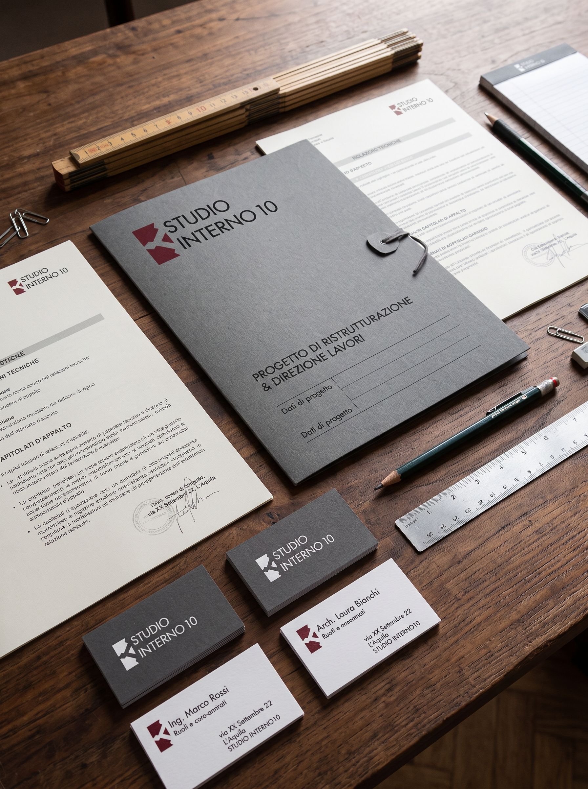
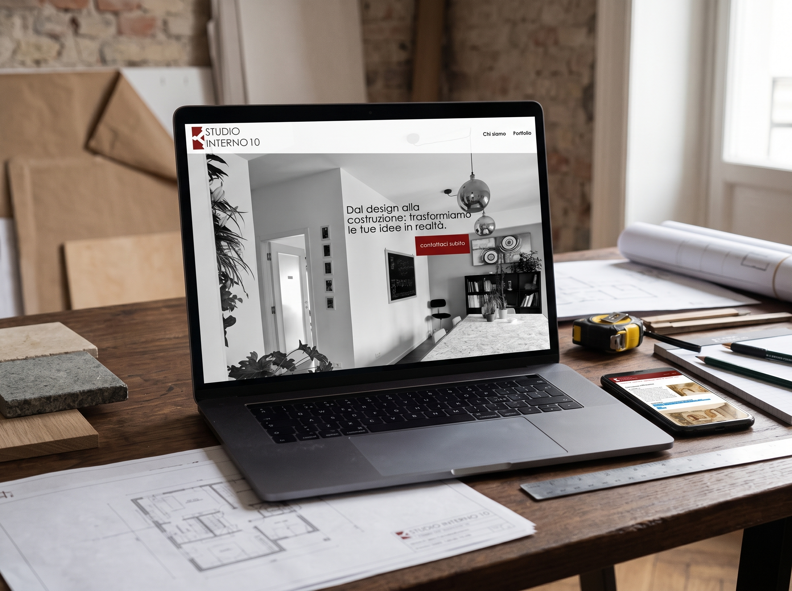

STUDIO INTERNO 10
Identità visiva e presenza digitale per uno studio associato di architettura e ingegneria con sede a L'Aquila. Un linguaggio geometrico, rigoroso e contemporaneo che riflette la precisione tecnica e la visione progettuale dello studio: dal rilievo e progettazione urbanistica alla direzione lavori e sicurezza in cantiere.



«Dal design alla costruzione: trasformare la complessità tecnica dell'ingegneria e la sensibilità dell'architettura in realtà tangibile.»


